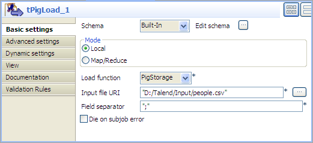
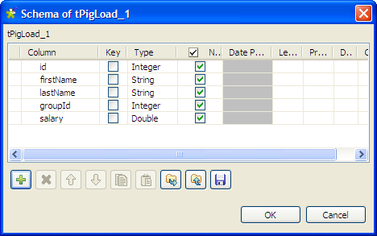
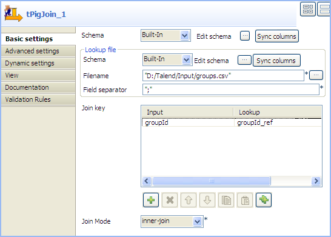
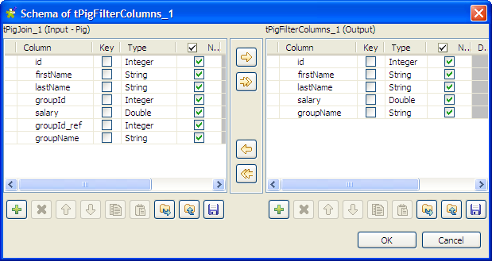
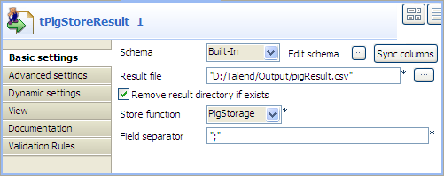

![[Avertissement]](../images/warning.png) | |
Ce composant est disponible dans la Palette de votre studio si vous avez souscrit à l'édition correspondante de Talend Enterprise Data Integration Big Data edition. |
|
Famille de composant |
Big Data/Hadoop | ||||
|
Fonction |
Ce composant vous permet d’effectuer des jointures entre deux fichiers à partir de clés de jointure. | ||||
|
Objectif |
Le composant tPigJoin est utilisé pour effectuer des jointures Inner Join et des jointures Outer Join à partir de clés de jointure de deux fichiers afin de créer des données à utiliser par Pig. | ||||
|
Basic settings |
Schema et Edit Schema |
Un schéma est une description de lignes, i.e., il définit le nombre de champs qui sont traités et passés au composant suivant. Le schéma est soit local (built-in) soit distant dans le Repository.
| |||
|
|
|
Built-in : Le schéma sera créé et conservé pour ce composant seulement. Voir également le Guide utilisateur de Talend Enterprise Studio. | |||
|
|
|
Repository : Le schéma existe déjà et est stocké dans le Repository. Ainsi, il peut être réutilisé dans divers projets et Jobs. Voir également le Guide utilisateur de Talend Enterprise Studio. | |||
|
|
Filename |
Spécifiez le chemin d’accès au fichier Lookup. | |||
|
|
Join key |
Cliquez sur le bouton [+] pour ajouter des lignes afin de configurer les clés de jointure Join key pour les fichiers Input file et Lookup. | |||
|
|
Join mode |
Sélectionnez une mode de jointure dans la liste : inner-join : Sélectionnez ce mode afin d’effectuer une jointure Inner Join entre deux relations ou plus, à partir des clés de jointure. left-outer-join : Sélectionnez ce mode afin d’effectuer une jointure Left Outer Join entre deux relations ou plus, à partir de clés de jointure. right-outer-join : Sélectionnez ce mode afin d’effectuer une jointure Right Outer Join entre deux relations ou plus, à partir des clés de jointure. full-outer-join : Sélectionnez ce mode afin de combiner les effets des jointures Left et Right Outer Joins. Pour plus d’informations concernant les jointures Inner Join et Outer Join, consultez : http://en.wikipedia.org/wiki/Join_%28SQL%29 (en anglais). | |||
|
Advanced settings |
Optimize the join |
Cochez cette case afin d’optimiser les performances des jointures à l’aide des jointures REPLICATED, SKEWED, ou MERGE. Pour plus d’informations concernant les jointures optimisées, consultez : http://pig.apache.org/docs/r0.8.0/piglatin_ref1.html#Specialized+Joins (en anglais). | |||
|
|
Use partitioner |
Cochez cette case afin de spécifier le Partitioner Hadoop qui contrôle le partitionnement des clés des map-sorties intermédiaires. Pour plus d’informations concernant l’utilisation du Partitioner Hadoop, consultez : http://hadoop.apache.org/common/docs/r0.20.2/api/org/apache/hadoop/mapred/Partitioner.html (en anglais). | |||
|
|
Increase parallelism |
Cochez cette case pour définir le nombre de tâches “reduce” pour des Jobs MapReduce. | |||
|
|
tStatCatcher Statistics |
Cochez cette case pour collecter les données de log, aussi bien au niveau du Job qu’au niveau de chaque composant. | |||
|
Utilisation |
Ce composant est généralement utilisé comme étape intermédiaire. Il nécessite donc un composant d’entrée et un composant de sortie. | ||||
|
Limitation |
La connaissance des scripts Pig est nécessaire. | ||||
![[Note]](../images/note.png)
Ce scénario décrit un Job à quatre composants combinant les données d'un fichier d'entrée et d'un fichier de référence correspondant à une clé de jointure donnée, supprime les colonnes indésirables puis sauvegarde le résultat final dans un fichier local.
Le fichier d'entrée principal contient les informations concernant des personnes : ID, prénom, nom de famille, ID de groupe et salaire, comme ci-dessous :
1;Woodrow;Johnson;3;1013.39 2;Millard;Monroe;2;8077.59 3;Calvin;Eisenhower;3;6866.88 4;Lyndon;Wilson;3;5726.28 5;Ronald;Garfield;2;4158.58 6;Rutherford;Buchanan;3;2897.00 7;Calvin;Coolidge;1;6650.66 8;Ulysses;Roosevelt;2;7854.78 9;Grover;Tyler;1;5226.88 10;Bill;Tyler;2;8964.66
Le fichier de référence contient uniquement les informations des IDs de groupes ainsi que le nom des groupes :
1;group_A 2;group_B
Déposez les composants suivants de la Palette dans l'espace de modélisation graphique : tPigLoad, tPigJoin, tPigFilterColumns et tPigStoreResult.
Connectez ces composants à l'aide de liens Row > Pig Combine.

Procédure 1.4. Charger le fichier d'entrée principal
Double-cliquez sur le tPigLoad pour ouvrir sa vue Basic settings.
Cliquez sur le bouton [...] à côté du champ Edit schema pour ouvrir la boîte de dialogue [Schema].
Cliquez sur le bouton [+] pour ajouter des colonnes. Renommez-les et définissez leur type selon la structure du fichier d'entrée. Dans cet exemple, le schéma d'entrée contient cinq colonnes : id (integer), firstName (string), lastName (string), groupId (integer) et salary (double).
Cliquez sur OK pour valider et fermer la boîte de dialogue.
Cliquez sur Local dans la zone Mode.
Sélectionnez PigStorage dans la liste Load function.
Renseignez le champ Input file URI avec le chemin d'accès complet au fichier d'entrée et laissez les autres paramètres tels qu'ils sont.
Procédure 1.5. Charger le fichier de référence et configurer la jointure Inner Join
Double-cliquez sur le tPigJoin pour ouvrir sa vue Basic settings.
Cliquez sur le bouton [...] du schéma principal pour ouvrir la boîte de dialogue [Schema].

Vérifiez que le schéma d'entrée a bien été récupéré du composant précédent. Si nécessaire, cliquez sur le bouton [->>] pour copier toutes les colonnes du schéma d'entrée au schéma de sortie.
Cliquez sur le bouton [+] sous la table de sortie pour ajouter de nouvelles colonnes, selon la structure des données du fichier de référence, groupId_ref (integer) et groupName (string) dans cet exemple. Cliquez sur OK pour fermer la boîte de dialogue.
Cliquez sur le bouton [...] du schéma du flux de référence pour ouvrir la boîte de dialogue [Schema].

Cliquez sur le bouton [+] sous la table de sortie pour ajouter : groupId_ref (integer) et groupName (string) puis cliquez sur OK pour fermer la boîte de dialogue.
Dans le champ Filename, spécifiez le chemin d'accès complet au fichier de référence.
Cliquez sur le bouton [+] sous la table Join key pour ajouter une ligne et sélectionnez groupId et groupId_ref, respectivement dans les liste Input et Lookup afin de mettre en correspondance les données du flux d'entrée principal et celles du flux de référence, selon l'ID du groupe.
Dans la liste Join Mode, sélectionnez inner-join.
Procédure 1.6. Définir le schéma de sortie final et le fichier de sortie
Double-cliquez sur le composant tPigFilterColumns pour ouvrir sa vue Basic settings.

Cliquez sur le bouton [...] à côté du champ Edit schema pour ouvrir la boîte de dialogue [Schema].
Dans le schéma d'entrée, sélectionnez les colonnes à inclure dans le fichier de résultat en cliquant sur celles-ci une par une en maintenant la touche Ctrl enfoncée. Cliquez sur le bouton [->] pour les copier dans le schéma de sortie. Cliquez sur OK pour valider le schéma et fermer la boîte de dialogue.
Dans cet exemple, le fichier de résultat doit inclure toutes les informations, sauf l'ID des groupes.
Double-cliquez sur le tPigStoreResult pour afficher sa vue Basic settings.
Cliquez sur Sync columns afin de récupérer la structure du schéma du composant précédent.
Dans le champ Result file, saisissez le chemin d'accès complet au fichier de résultat et cochez la case Remove result file directory if exists.
Sélectionnez PigStorage dans la liste Store function et laissez les autres paramètres tels qu'ils sont.